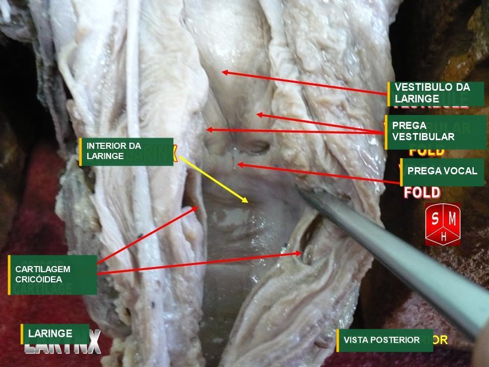
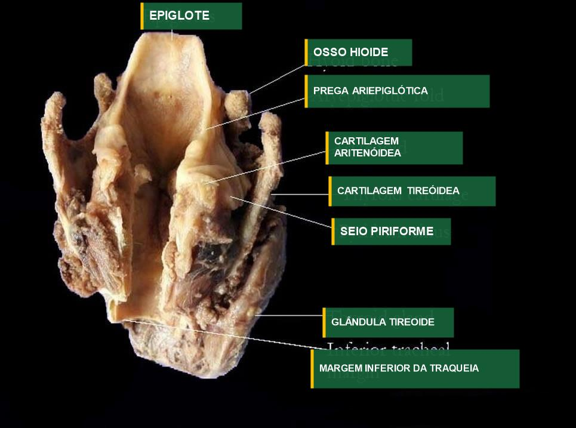
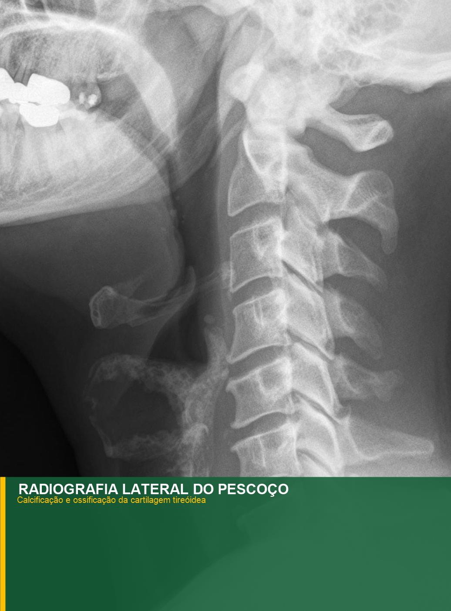
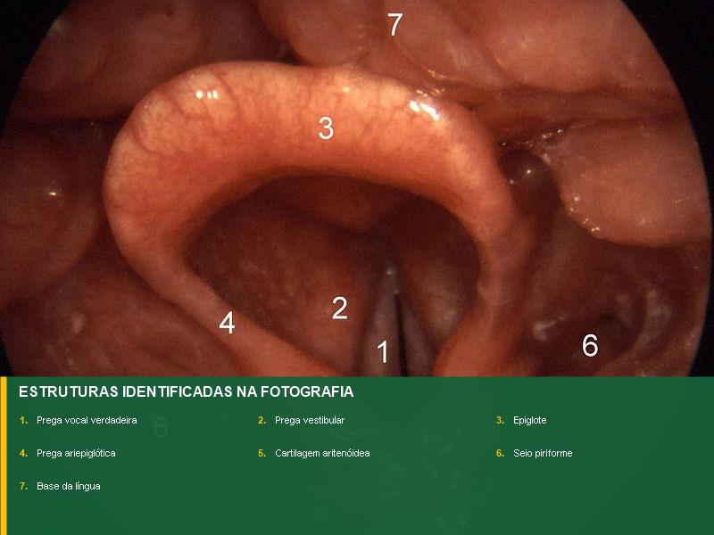
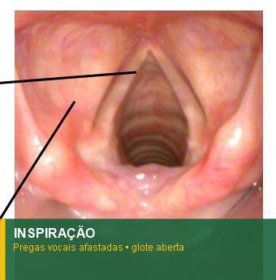
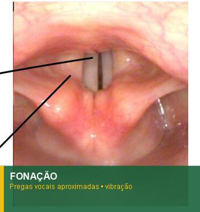
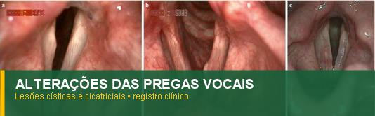
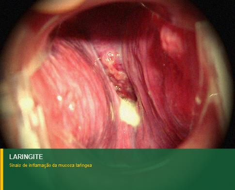
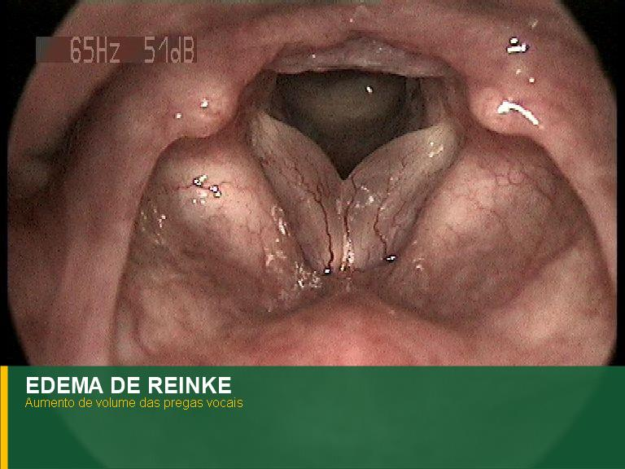
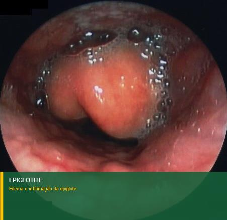

↗
Respiração
Permite a passagem do ar entre a faringe e a traqueia, ajustando a abertura da glote.
GRAU TÉCNICO · RADIOLOGIA · ANATOMIA & FISIOLOGIA
Uma jornada visual pela arquitetura da laringe: osso hioide, cartilagens, articulações, músculos e doenças — até chegar à produção e aos cuidados com a voz.

Fotografia de uma peça anatômica humana dissecada em vista posterior. A região interna permite reconhecer o vestíbulo laríngeo e as pregas vestibular e vocal. Os rótulos originais em inglês foram substituídos por identificações em português nos mesmos pontos da fotografia.
Fotografia: Anatomist90 · Wikimedia Commons · CC BY-SA 3.0 · Fonte e licença · Substituição dos rótulos e identificação didática em PT-BR.01 / VISÃO GERAL
A laringe é um órgão musculocartilaginoso localizado na região anterior do pescoço, entre a faringe e a traqueia. Seu arcabouço sustenta e protege a via aérea, permite a passagem do ar e abriga as estruturas que participam da fonação.
Permite a passagem do ar entre a faringe e a traqueia, ajustando a abertura da glote.
Abriga as pregas vocais verdadeiras, que vibram com o fluxo de ar e geram a fonte sonora.
Participa do fechamento protetor da via aérea durante a deglutição, em coordenação com a elevação laríngea, o fechamento das pregas e outros mecanismos faríngeos.
Localização: aproximadamente entre as vértebras cervicais C3 e C6 no adulto. Sua posição pode variar com a idade, a postura e os movimentos de deglutição.
COMPOSIÇÃO
A laringe é formada por cartilagens, articulações, músculos, ligamentos, membranas e mucosa. O osso hioide fica acima dela e serve de ponto de fixação para músculos relacionados aos seus movimentos.
02 / ESQUELETO CARTILAGINOSO
O esqueleto da laringe é cartilaginoso: são três cartilagens ímpares e três pares, totalizando nove. Elas mantêm a via aérea aberta, protegem estruturas internas e oferecem pontos de fixação para músculos e ligamentos.

Registro fotográfico de uma peça humana dissecada. A imagem mostra a epiglote, o osso hioide e estruturas cartilaginosas relacionadas à laringe. As identificações originais em inglês foram cobertas e substituídas, nos mesmos pontos, por nomes em português brasileiro.
Fotografia: Dr. Roshan Nasimudeen · Government Medical College, Kozhikode · Wikimedia Commons · CC BY-SA 3.0 · Fonte e licença · Substituição dos rótulos e identificação didática em PT-BR.É a maior. Suas lâminas formam a proeminência laríngea, conhecida como pomo de Adão, e ajudam a proteger as estruturas internas.
Predominantemente hialinaTem formato de anel completo. Sustenta a laringe e faz a transição para a traqueia.
HialinaÉ elástica e participa da proteção da entrada laríngea durante a deglutição, em conjunto com a elevação e o fechamento coordenado da laringe.
ElásticaMovimentam-se sobre a cricóidea e controlam a posição das pregas vocais.
Predominantemente hialinasPequenas cartilagens nos ápices das aritenóideas, associadas às pregas ariepiglóticas.
ElásticasContribuem para a sustentação das pregas ariepiglóticas.
Elásticas03 / BASE ÓSSEA E ARCABOUÇO LARÍNGEO
A laringe não possui um esqueleto ósseo próprio: sua sustentação é principalmente cartilaginosa. O osso hioide fica imediatamente acima dela e se conecta ao conjunto por membranas e músculos.

Radiografia lateral real do pescoço. Observa-se calcificação e ossificação acentuadas da cartilagem tireóidea. O achado ilustra como estruturas cartilaginosas podem adquirir maior radiopacidade; isoladamente, não significa necessariamente uma doença.
Radiografia: Hellerhoff · Wikimedia Commons · CC BY-SA 3.0 · Fonte e licença · Identificação didática adicionada para este material.Osso em forma de ferradura, com corpo, cornos maiores e cornos menores. Não se articula diretamente com outros ossos: fica suspenso por músculos e ligamentos.
É ponto de fixação da língua, do assoalho da boca e de músculos que elevam ou abaixam o complexo hio-laríngeo.A membrana tireo-hióidea liga o osso hioide à cartilagem tireóidea. Durante a deglutição, a elevação coordenada do hioide e da laringe contribui para a proteção das vias aéreas.
O hioide é tecido ósseo. Tireóidea, cricóidea, epiglote e demais peças do arcabouço são cartilagens. Os anéis da traqueia também são cartilaginosos, mas não fazem parte das nove cartilagens laríngeas.
Conceito fundamental: não diga que a laringe é formada por ossos. O correto é afirmar que ela possui um arcabouço cartilaginoso e se relaciona superiormente com o osso hioide.
DESENVOLVIMENTO E ENVELHECIMENTO
Sim. As cartilagens hialinas — especialmente tireóidea e cricóidea — podem apresentar calcificação e ossificação progressivas com o envelhecimento. O padrão e a intensidade variam entre pessoas; esse achado radiológico, por si só, não define doença.
A epiglote, as cartilagens corniculadas e as cuneiformes são predominantemente elásticas e, em geral, não seguem o mesmo padrão de ossificação das cartilagens hialinas.
04 / CONEXÕES E MOBILIDADE
As cartilagens não ficam soltas. Elas se conectam por articulações, membranas fibroelásticas e ligamentos que estabilizam o arcabouço e permitem movimentos precisos.
Entre os cornos inferiores da cartilagem tireóidea e a cricóidea. Permite inclinação e deslizamento que alteram o comprimento e a tensão das pregas vocais.
Relação funcional: ajuste da altura vocal.Entre a base de cada aritenóidea e a lâmina da cricóidea. Permite rotação e deslizamento, aproximando ou afastando as pregas vocais.
Relação funcional: abertura e fechamento da glote.MEMBRANAS E LIGAMENTOS IMPORTANTES
Essas estruturas unem as peças do arcabouço e formam paredes internas da laringe. Algumas também dão origem a ligamentos associados às pregas vocais e vestibulares.
Para memorizar: a articulação cricotireóidea ajusta a tensão; a cricoaritenóidea muda a posição das pregas vocais.
05 / ORGANIZAÇÃO INTERNA
Internamente, a laringe é dividida em supraglote, glote e subglote. A glote é a região diretamente relacionada à produção vocal.

Registro clínico endoscópico. Os números da fotografia foram traduzidos e identificados diretamente na imagem: prega vocal verdadeira, prega vestibular, epiglote, prega ariepiglótica, cartilagem aritenóidea, seio piriforme e base da língua. A imagem não registra a vibração em movimento.
Fotografia: Welleschik · Wikimedia Commons · CC BY-SA 3.0 · Fonte e licençaInclui epiglote, pregas ariepiglóticas, pregas vestibulares e outras estruturas superiores. Participa da proteção das vias aéreas.
Relaciona-se às pregas vocais verdadeiras e à rima da glote — o espaço entre elas. É central para a fonação.
Vai da região inferior das pregas vocais até a margem inferior da cartilagem cricóidea, continuando-se com a traqueia.
Importante: as pregas vestibulares são chamadas de falsas pregas vocais. Elas têm função protetora, mas não são as principais responsáveis pela voz habitual.
06 / PREGAS VOCAIS
As pregas vocais verdadeiras são duas estruturas revestidas por mucosa, com tecido conjuntivo e músculo. Sua organização em camadas permite a vibração que dá origem à fonte sonora.
DURANTE A RESPIRAÇÃO

Inspiração: as pregas vocais se afastam (abdução) e a rima da glote se amplia, permitindo a passagem do ar.
Fotografias endoscópicas: James P. Thomas, MD · composição de RWhitwam · Wikimedia Commons · CC BY-SA 4.0 · Fonte e licençaDURANTE A FONAÇÃO

Fonação: as pregas vocais se aproximam (adução); a pressão do ar expiratório desencadeia a vibração que produz a fonte sonora.
Fotografias endoscópicas: James P. Thomas, MD · composição de RWhitwam · Wikimedia Commons · CC BY-SA 4.0 · Fonte e licença
Registros clínicos endoscópicos de alterações císticas e cicatriciais. As imagens mostram alterações da superfície e da estrutura das pregas vocais; não são cortes histológicos e não devem ser usadas isoladamente para estabelecer diagnóstico.
Fotografia: Jörg Bohlender · Wikimedia Commons · CC BY 3.0 · Fonte e licençaMODELO CORPO–COBERTURA
Espaço de Reinke: o acúmulo de líquido nessa camada superficial pode causar edema de Reinke, aumentando a massa das pregas vocais e deixando a voz mais grave e rouca.
07 / MUSCULATURA LARÍNGEA
Os músculos intrínsecos controlam diretamente a posição e a tensão das pregas vocais. Os extrínsecos movimentam e estabilizam a laringe como um conjunto.
Promove a abdução das pregas vocais. É o único músculo intrínseco que abre diretamente a glote.
↔Promove a adução das pregas vocais, aproximando-as durante a fonação.
⇢⇠Alongamento e tensionamento das pregas vocais; participa da produção de frequências mais altas.
↗Participa do ajuste de comprimento, espessura e tensão. Sua porção medial corresponde ao músculo vocal.
〰MÚSCULOS EXTRÍNSECOS
Os supra-hióideos — como digástrico, estilo-hióideo, milo-hióideo e gênio-hióideo — participam da elevação do complexo hio-laríngeo. Os infra-hióideos ajudam na estabilização e nos movimentos de descida.
08 / INERVAÇÃO
A inervação da laringe vem principalmente do nervo vago, o décimo par craniano. Dois ramos são essenciais para compreender a função vocal.
RAMO DO NERVO VAGO
RAMO DO NERVO VAGO
Trajeto surpreendente: o nervo laríngeo recorrente esquerdo desce ao tórax, contorna o arco da aorta e retorna em direção ao pescoço. O direito contorna a artéria subclávia direita.
Uma lesão nervosa pode causar paresia ou paralisia de prega vocal, rouquidão, voz soprosa e, em alguns casos, dificuldade respiratória ou de proteção durante a deglutição.
09 / DOENÇAS E ALTERAÇÕES
As doenças da laringe podem afetar a mucosa, as cartilagens, as pregas vocais, a mobilidade muscular ou a inervação. Algumas alteram a voz; outras também comprometem a respiração e a deglutição.
Inflamação da mucosa laríngea, aguda ou crônica. Pode causar rouquidão, tosse, irritação e dor; infecções e irritantes estão entre as causas.
Espessamentos geralmente bilaterais, em pontos correspondentes das pregas vocais, associados a colisões repetidas e fonotrauma. Podem ocorrer em pessoas que usam a voz intensamente.
Pólipos e cistos são lesões benignas, mas diferentes: pólipos costumam ser exofíticos e frequentemente unilaterais; cistos são lesões encapsuladas no interior da prega vocal. Ambos podem alterar a vibração.
Acúmulo de líquido na camada superficial da lâmina própria. É fortemente associado ao tabagismo e pode deixar a voz mais grave e áspera.
Crescimento de lesões papilomatosas frequentemente relacionadas aos tipos 6 e 11 do papilomavírus humano (HPV). Pode provocar rouquidão e, em alguns casos, obstrução respiratória.
Placas brancas na mucosa precisam ser investigadas: leucoplasia é uma descrição visual, não um diagnóstico definitivo. O câncer pode causar rouquidão persistente, dor ao engolir, dificuldade para deglutir, dor referida ao ouvido e aumento de volume no pescoço.
Alteração do movimento por comprometimento neurológico. Pode causar voz soprosa, tosse fraca, engasgos e, conforme a posição das pregas, dificuldade respiratória.
Uso excessivo ou descoordenado da musculatura durante a fala. Pode provocar esforço, aperto na garganta, fadiga e qualidade vocal alterada, mesmo sem lesão estrutural evidente.
Estreitamento da via aérea por cicatriz, trauma, intubação ou doença inflamatória. Pode gerar estridor (ruído respiratório agudo) e falta de ar; casos importantes podem ameaçar a passagem do ar.
Inflamação importante da epiglote e dos tecidos próximos. Pode evoluir rapidamente com febre, dor intensa e dificuldade para engolir ou respirar; é uma urgência médica.
FOTOGRAFIAS CLÍNICAS
As imagens abaixo são registros reais de exames endoscópicos. Compare o aspecto dos tecidos e leia a legenda antes de relacionar a fotografia a uma doença.

A mucosa apresenta sinais de inflamação. A aparência pode variar conforme a causa e a duração do quadro.
Fotografia: MylesSG · Wikimedia Commons · CC BY-SA 3.0 · Fonte e licença
O acúmulo de líquido na camada superficial da lâmina própria aumenta o volume das pregas vocais e pode deixar a voz mais grave e rouca.
Fotografia: Phoni · Wikimedia Commons · CC BY-SA 4.0 · Fonte e licença
A epiglote apresenta edema e inflamação. É uma condição potencialmente grave, que pode comprometer rapidamente a passagem do ar.
Fotografia: Takashi Fujisawa · Wikimedia Commons · CC BY-SA 3.0 · Fonte e licençaAviso: fotografias clínicas podem causar desconforto visual. São apresentadas exclusivamente para fins educacionais e não permitem diagnóstico individual.
Atenção: rouquidão persistente, especialmente quando acompanhada de dificuldade para respirar ou engolir, dor importante ou sangue na tosse, precisa de avaliação profissional. Trauma no pescoço com dificuldade respiratória é uma emergência.
TRAUMAS E LESÕES
Impactos no pescoço, estrangulamento, acidentes e procedimentos médicos podem lesar cartilagens, articulações, nervos ou pregas vocais. Fraturas da tireóidea ou da cricóidea podem ameaçar a permeabilidade da via aérea.
VARIAÇÕES ANATÔMICAS
Dimensões da laringe, ângulo da cartilagem tireóidea, comprimento das pregas vocais e posição laríngea variam entre indivíduos. Pequenas assimetrias podem existir sem representar necessariamente uma alteração patológica.
10 / PREVENÇÃO E PRESERVAÇÃO
A saúde laríngea depende da proteção das vias aéreas, da redução de irritantes, do uso vocal equilibrado e da identificação precoce de sintomas.
Não fumar nem usar produtos de tabaco. Evite o consumo excessivo de álcool: tabagismo e álcool são fatores importantes de risco para câncer de laringe. Reduza também a exposição à fumaça passiva, poeiras e vapores químicos.
Mantenha ingestão regular de água, respeitando suas necessidades e orientações de saúde. A hidratação favorece o funcionamento dos tecidos e das secreções; manter hábitos saudáveis também protege a saúde geral.
Evite gritar, competir com ruído ou falar por longos períodos sem pausas. Use microfone ou amplificação quando necessário.
Pigarrear e tossir repetidamente aumentam o atrito entre as pregas vocais. Experimente engolir, beber um pequeno gole de água ou buscar a causa da irritação.
Se estiver rouco, com dor ou fadiga vocal, reduza a demanda de fala e canto. Não tente vencer a rouquidão aumentando o volume.
Durma bem, mantenha alimentação equilibrada e procure orientação para refluxo, alergias ou infecções persistentes. Não se automedique.
PARA QUEM USA A VOZ PROFISSIONALMENTE
Cantores, professores, atores, vendedores e profissionais que falam por muitas horas devem alternar períodos de uso e descanso, preparar a voz antes de atividades exigentes e adequar o ambiente acústico.
AMBIENTE E PROTEÇÃO
Ventilação adequada, controle de poeira e produtos químicos, pausas e amplificação sonora reduzem a necessidade de elevar a voz. Rouquidão recorrente merece avaliação, não apenas repouso improvisado.
SINAIS DE ALERTA
O médico otorrinolaringologista avalia a laringe; o fonoaudiólogo atua na avaliação e reabilitação da função vocal, conforme o caso.
11 / PRODUÇÃO DA VOZ
A voz é produzida pela interação entre respiração, vibração laríngea e ressonância. A laringe gera a fonte sonora; o trato vocal modifica esse som e os articuladores transformam-no em fala.
Fornecem o fluxo de ar expiratório, que é a energia da produção vocal.
Conduz o ar até a laringe.
Com a aproximação e a passagem do ar, entram em vibração e geram o som laríngeo.
Faringe e cavidades oral e nasal modificam e ressoam o som.
Língua, lábios, dentes e mandíbula ajudam a formar os sons da fala.
MECANISMO MIOELÁSTICO-AERODINÂMICO
A musculatura posiciona as pregas vocais. O ar expirado aumenta a pressão abaixo delas — a pressão subglótica. Quando essa pressão supera a resistência glótica, o ar passa. A elasticidade dos tecidos e as forças aerodinâmicas sustentam a oscilação.
O efeito Bernoulli pode contribuir para a aproximação das pregas, mas não explica sozinho a vibração vocal.
BIOMECÂNICA
A mucosa que recobre as pregas vocais realiza um movimento ondulatório durante a vibração. Alterações nessa onda podem indicar rigidez, cicatrizes ou lesões.
Uma imagem estática permite observar a anatomia, mas não registra a onda mucosa em movimento. Para avaliar a vibração e a simetria das pregas vocais, utiliza-se a videolaringoestroboscopia.
Fotografia: Welleschik · Wikimedia Commons · CC BY-SA 3.0 · Fonte e licença12 / CARACTERÍSTICAS VOCAIS
A voz possui características acústicas e perceptivas. Frequência, intensidade e timbre são fundamentais, mas qualidade vocal, ressonância, articulação e prosódia também participam da identidade e da expressividade da fala.
É a frequência de repetição dos ciclos vibratórios. Está relacionada à percepção de altura: voz mais grave ou mais aguda.
MEDIDA EM HERTZ (Hz)Relaciona-se à amplitude e à energia sonora percebida. Pode variar com o fluxo de ar e o ajuste glótico.
MEDIDA EM DECIBÉIS (dB)É o conjunto de características que permite distinguir vozes mesmo quando têm altura e intensidade semelhantes.
DEPENDE DO ESPECTRO E DA RESSONÂNCIAÉ a impressão global da emissão: pode ser percebida como soprosa, rouca, áspera, tensa, fraca ou estável. A descrição não substitui o diagnóstico.
DESCRIÇÃO PERCEPTIVARitmo, pausas, entonação e acentuação dão organização e intenção à fala. Língua, lábios, dentes, palato e mandíbula articulam os sons.
EXPRESSIVIDADE DA FALARESSONÂNCIA
Faringe, boca e cavidade nasal modificam o espectro do som produzido na laringe. As regiões de ressonância são chamadas de formantes e ajudam a diferenciar as vogais.
Extensão vocal é o conjunto de notas que alguém consegue produzir. Tessitura é a região em que a pessoa canta com maior conforto e estabilidade. Não são a mesma coisa.
13 / PARA SURPREENDER
Use estas curiosidades para enriquecer a apresentação e mostrar que você compreendeu a relação entre anatomia e função.
As pregas vocais são estruturas formadas por mucosa, tecido conjuntivo, ligamento e músculo.
Sem fluxo de ar expiratório, não ocorre a fonação habitual.
O fechamento laríngeo ajuda a impedir que alimentos e líquidos cheguem aos pulmões.
O crescimento laríngeo e o alongamento das pregas vocais alteram a frequência vocal.
O nervo laríngeo recorrente esquerdo contorna o arco da aorta antes de retornar ao pescoço.
Pulmões, laringe, faringe, boca, língua, lábios e sistema nervoso atuam em conjunto.
COMO A LARINGE É AVALIADA?
14 / DEMONSTRAÇÃO AO VIVO
Uma demonstração simples ajuda a turma a ouvir e compreender o que acontece dentro da laringe.
Inspire e expire silenciosamente. Explique que as pregas vocais ficam afastadas para a passagem do ar.
Faça um “AAAAA” sustentado. Explique que as pregas vocais se aproximam e vibram.
Faça um som grave e depois um agudo. Explique os ajustes de tensão e de vibração.
Mostre como ressonância e articulação transformam a fonte sonora em uma emissão reconhecível.
15 / FIXAÇÃO DO CONTEÚDO
Teste seus conhecimentos com dez perguntas rápidas sobre anatomia, doenças, prevenção e produção vocal. Ao final, confira as respostas e revise o que precisar.
FIM DA JORNADA · INÍCIO DA COMPREENSÃO
Compreender a laringe é entender como uma estrutura pequena e altamente especializada participa de funções essenciais: respirar, proteger e comunicar.
Voltar ao início ↑FONTES E LEITURAS PARA APROFUNDAMENTO
COMPARTILHE O CONTEÚDO
Depois de publicar este projeto no GitHub Pages, o endereço desta página pode ser transformado em um código QR para a turma abrir o material no próprio celular.
Se a página já estiver publicada, o endereço atual será preenchido automaticamente.